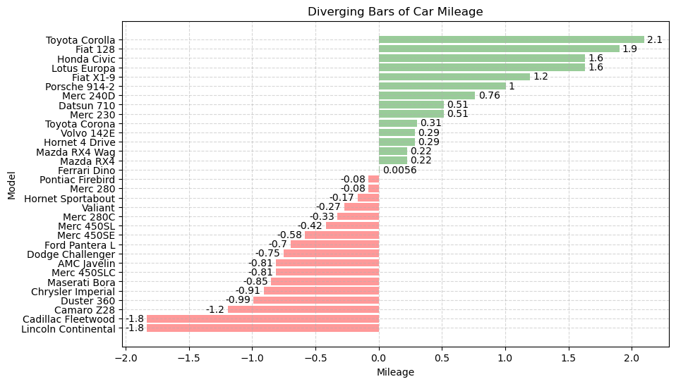
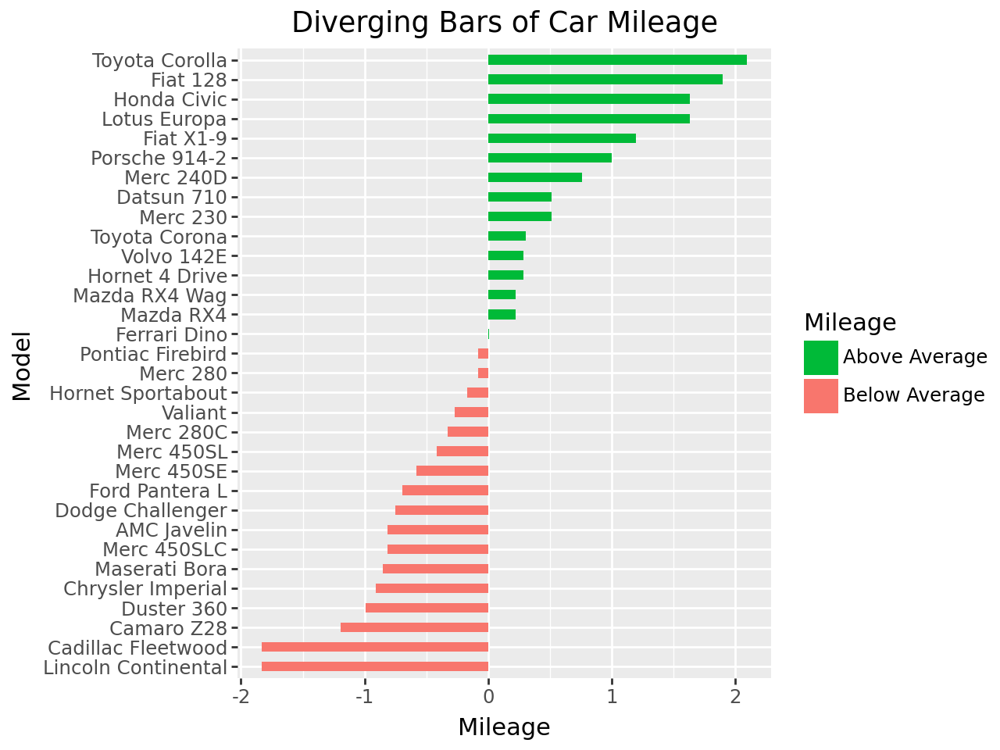
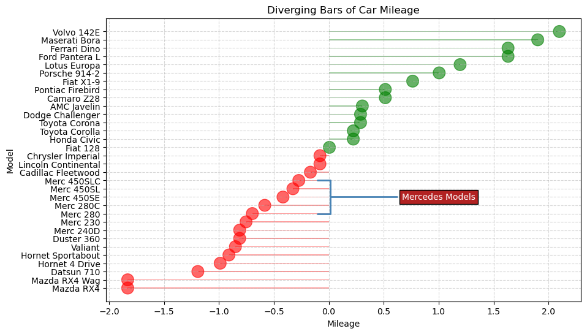
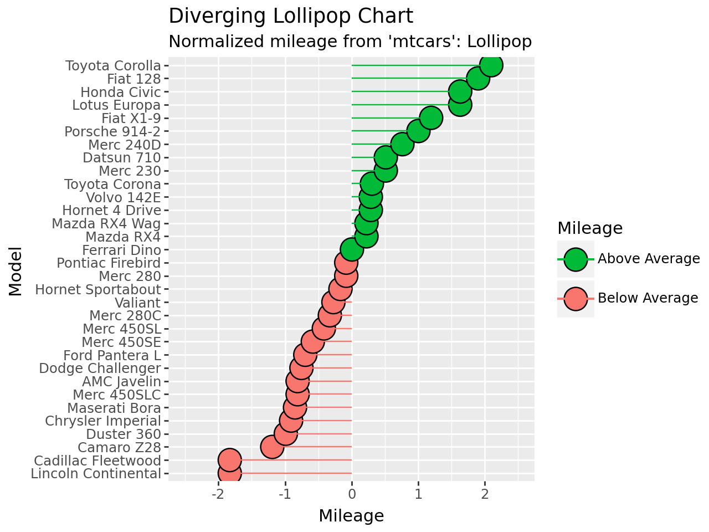
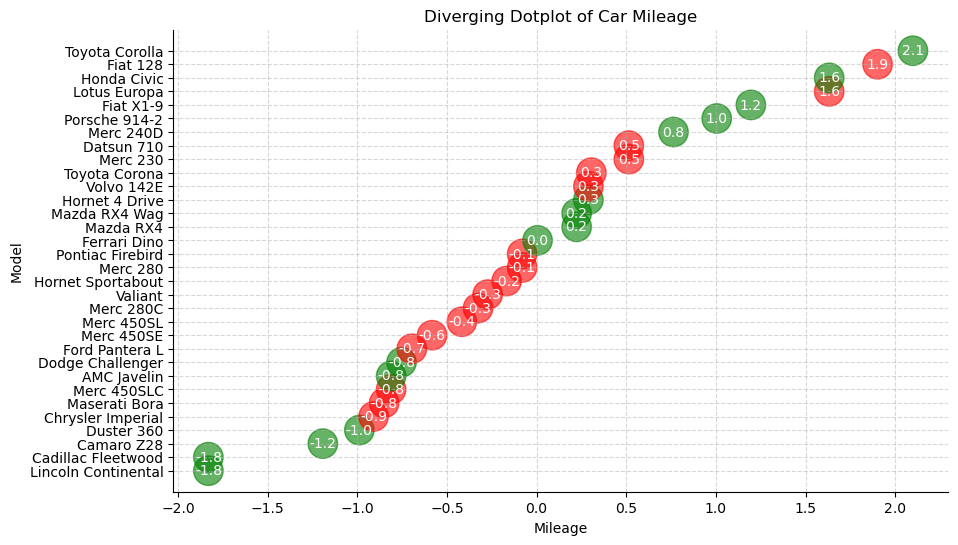
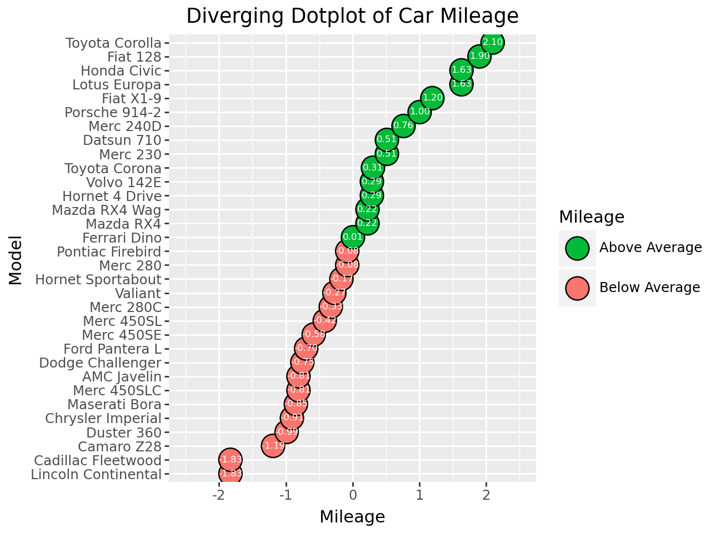

Deviation#
import matplotlib.pyplot as plt
import numpy as np
import pandas as pd
from plotnine import *
/var/folders/py/n14256yd5r5ddms88x9bvsv40000gn/T/ipykernel_76615/1109453179.py:3: DeprecationWarning:
Pyarrow will become a required dependency of pandas in the next major release of pandas (pandas 3.0),
(to allow more performant data types, such as the Arrow string type, and better interoperability with other libraries)
but was not found to be installed on your system.
If this would cause problems for you,
please provide us feedback at https://github.com/pandas-dev/pandas/issues/54466
import pandas as pd
---------------------------------------------------------------------------
ModuleNotFoundError Traceback (most recent call last)
Cell In[1], line 4
2 import numpy as np
3 import pandas as pd
----> 4 from plotnine import *
ModuleNotFoundError: No module named 'plotnine'
Diverging Bar#
mtcars = pd.read_csv("data/mtcars.csv")
mtcars.head()
| mpg | cyl | disp | hp | drat | wt | qsec | vs | am | gear | carb | fast | cars | |
|---|---|---|---|---|---|---|---|---|---|---|---|---|---|
| 0 | 4.582576 | 6 | 160.0 | 110 | 3.90 | 2.620 | 16.46 | 0 | 1 | 4 | 4 | 1 | Mazda RX4 |
| 1 | 4.582576 | 6 | 160.0 | 110 | 3.90 | 2.875 | 17.02 | 0 | 1 | 4 | 4 | 1 | Mazda RX4 Wag |
| 2 | 4.774935 | 4 | 108.0 | 93 | 3.85 | 2.320 | 18.61 | 1 | 1 | 4 | 1 | 1 | Datsun 710 |
| 3 | 4.626013 | 6 | 258.0 | 110 | 3.08 | 3.215 | 19.44 | 1 | 0 | 3 | 1 | 1 | Hornet 4 Drive |
| 4 | 4.324350 | 8 | 360.0 | 175 | 3.15 | 3.440 | 17.02 | 0 | 0 | 3 | 2 | 1 | Hornet Sportabout |
x = mtcars["mpg"]
mtcars["mpg_z"] = (x - x.mean()) / x.std()
mtcars["types"] = np.where(mtcars["mpg_z"] < 0, "red", "green")
mtcars_sorted = mtcars.sort_values("mpg_z").reset_index()
mtcars_sorted.head()
| index | mpg | cyl | disp | hp | drat | wt | qsec | vs | am | gear | carb | fast | cars | mpg_z | types | |
|---|---|---|---|---|---|---|---|---|---|---|---|---|---|---|---|---|
| 0 | 15 | 3.224903 | 8 | 460.0 | 215 | 3.00 | 5.424 | 17.82 | 0 | 0 | 3 | 4 | 0 | Lincoln Continental | -1.829979 | red |
| 1 | 14 | 3.224903 | 8 | 472.0 | 205 | 2.93 | 5.250 | 17.98 | 0 | 0 | 3 | 4 | 0 | Cadillac Fleetwood | -1.829979 | red |
| 2 | 23 | 3.646917 | 8 | 350.0 | 245 | 3.73 | 3.840 | 15.41 | 0 | 0 | 3 | 4 | 0 | Camaro Z28 | -1.191664 | red |
| 3 | 6 | 3.781534 | 8 | 360.0 | 245 | 3.21 | 3.570 | 15.84 | 0 | 0 | 3 | 4 | 0 | Duster 360 | -0.988049 | red |
| 4 | 16 | 3.834058 | 8 | 440.0 | 230 | 3.23 | 5.345 | 17.42 | 0 | 0 | 3 | 4 | 0 | Chrysler Imperial | -0.908604 | red |
_, ax = plt.subplots(figsize=(10, 6))
bar = ax.barh(
y=mtcars_sorted.index,
width=mtcars_sorted.mpg_z,
color=mtcars_sorted.types,
alpha=0.4,
lw=5,
)
ax.bar_label(container=bar, fmt="%0.2g", label_type="edge", padding=3)
ax.set(
xlabel="Mileage",
ylabel="Model",
yticks=mtcars_sorted.index,
yticklabels=mtcars_sorted.cars,
title="Diverging Bars of Car Mileage",
)
ax.tick_params(axis="both", labelsize="medium")
ax.grid(linestyle="--", alpha=0.5)
plt.show()

ggplot2 version#
g = ggplot(mtcars_sorted, aes(x="cars", y="mpg_z", label="mpg_z"))
(
g
+ geom_bar(aes(fill="types"), stat="identity", width=0.5)
+ scale_fill_manual(
name="Mileage",
labels=["Above Average", "Below Average"],
values={"green": "#00ba38", "red": "#f8766d"},
)
+ scale_x_discrete(limits=mtcars_sorted.cars)
+ labs(
title="Diverging Bars of Car Mileage",
x="Model",
y="Mileage",
)
+ theme(plot_title=element_text(hjust=0.5))
+ coord_flip()
)

Diverging Lollipop#
_, ax = plt.subplots(figsize=(10, 6))
ax.scatter(
mtcars_sorted.mpg_z,
mtcars_sorted.index,
color=mtcars_sorted.types,
s=200,
alpha=0.6,
)
ax.barh(
y=mtcars_sorted.index,
width=mtcars_sorted.mpg_z,
color=mtcars_sorted.types,
alpha=0.4,
height=0.1,
)
ax.annotate(
"Mercedes Models",
xy=(0.0, 11.0),
xytext=(1.0, 11),
xycoords="data",
fontsize="medium",
ha="center",
va="center",
color="white",
bbox=dict(boxstyle="square", fc="firebrick"),
arrowprops=dict(
arrowstyle="-[, widthB=2.0, lengthB=1.5", lw=2.0, color="steelblue"
),
)
ax.set(
xlabel="Mileage",
ylabel="Model",
yticks=mtcars.index,
yticklabels=mtcars.cars,
title="Diverging Bars of Car Mileage",
)
ax.tick_params(axis="both", labelsize="medium")
ax.grid(linestyle="--", alpha=0.5)
plt.show()

ggplot2 version#
(
g
+ geom_point(aes(fill="types"), stat="identity", size=8)
+ scale_fill_manual(
name="Mileage",
labels=["Above Average", "Below Average"],
values={"green": "#00ba38", "red": "#f8766d"},
)
+ geom_segment(aes(y=0, x="cars", yend="mpg_z", xend="cars", color="types"))
+ scale_color_manual(
name="Mileage",
labels=["Above Average", "Below Average"],
values={"green": "#00ba38", "red": "#f8766d"},
)
+ scale_x_discrete(limits=mtcars_sorted.cars)
+ labs(
title="Diverging Lollipop Chart",
subtitle="Normalized mileage from 'mtcars': Lollipop",
x="Model",
y="Mileage",
)
+ ylim(-2.5, 2.5)
+ coord_flip()
)

Diverging Dot#
_, ax = plt.subplots(figsize=(10, 6))
scat = ax.scatter(
mtcars_sorted.mpg_z, mtcars_sorted.index, s=450, alpha=0.6, color=mtcars.types
)
for x, y, text in zip(mtcars_sorted.mpg_z, mtcars_sorted.index, mtcars_sorted.mpg_z):
ax.text(
x,
y,
round(text, 1),
horizontalalignment="center",
verticalalignment="center",
fontdict={"color": "white"},
)
ax.spines[["top", "right"]].set_visible(False)
ax.set(
xlabel="Mileage",
ylabel="Model",
yticks=mtcars_sorted.index,
yticklabels=mtcars_sorted.cars,
title="Diverging Dotplot of Car Mileage",
)
ax.tick_params(axis="both", labelsize="medium")
ax.grid(linestyle="--", alpha=0.5)
plt.show()

ggplot2 version#
(
g
+ geom_point(aes(fill="types"), stat="identity", size=8)
+ scale_fill_manual(
name="Mileage",
labels=["Above Average", "Below Average"],
values={"green": "#00ba38", "red": "#f8766d"},
)
+ geom_text(
color="white",
size=6,
format_string="{:.2f}",
)
+ labs(
title="Diverging Dotplot of Car Mileage",
x="Model",
y="Mileage",
)
+ theme(plot_title=element_text(hjust=0.5))
+ scale_x_discrete(limits=mtcars_sorted.cars)
+ ylim(-2.5, 2.5)
+ coord_flip()
)
